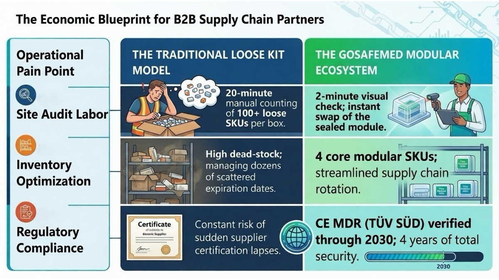

The Matrix of Order: A Procurement Director’s Definitive Guide to Modular First Aid Ecosystems and Risk Isolation
JUN 17, 2026

For corporate safety directors, international Personal Protective Equipment (PPE) distributors, and Occupational Health and Safety (OH&S) service providers, managing emergency readiness is traditionally a chaotic logistics challenge. The industry has long suffered under the “All-in-One” standard—heavy, disorganized trauma bags stuffed with hundreds of unsegregated, loose components. On the operational floor, this disorganization results in critical deployment delays; in the corporate ledger, it manifests as inflated audit labor costs, expired inventory waste, and severe compliance vulnerabilities.
True risk mitigation requires shifting from bulk product hoarding to structured Action-Based Logic. The GoSafeMed Modular First Aid System does not merely supply medical hardware; it establishes a strict protocol of risk isolation. By dividing emergency response into four distinct, independent operational tiers—Massive Hemorrhage, Airway Management, Advanced Burn Care, and Precision Wound Closure—we convert unpredictable medical crises into a predictable, highly auditable supply chain process.
Module 1: The Tactical Bleeding Core (Stop the Bleed Standard)
In heavy industrial fabrication, high-risk forestry, and transport logistics, catastrophic hemorrhaging from machinery accidents remains the most immediate life-threatening risk. When a main artery is breached, the survival window is measured in seconds, rendering loose, buried bandages entirely useless.
The GoSafeMed Bleeding Control Module isolates this extreme hazard into a high-visibility tactical sub-pack. Driven by our premium mechanical Metal Tourniquet, Advanced Hemostatic Gauze, and a 6-inch Emergency Bandage, this module eliminates the panic of searching through a chaotic bag. Responders instantly deploy heavy mechanical pressure to halt arterial bleeding within 60 seconds. For procurement officers, isolating bleeding control ensures that life-saving tactical hardware remains uncompromised, sterile, and instantly accessible without contamination from daily minor first aid incidents, effectively shielding enterprises from massive worker compensation liabilities.
Module 2: The Critical Airway & Respiration Shield (MARCH Protocol)
Following hemorrhage stabilization, the secondary clinical priority under the international MARCH protocol is securing the patient’s respiratory integrity. In environments prone to blast impacts, crushing injuries, or acute chemical inhalation, compromised airways can lead to fatal hypoxia before emergency medical services arrive on site.
The GoSafeMed Tactical IFAK Module incorporates advanced, deployment-ready interventions, featuring our specialized double Vented Chest Seals alongside professional Nasopharyngeal Airways (NPA) with lubricant and an 18-inch moldable Aluminum Splint. This advanced configuration allows facility safety officers to seal open pneumothorax (sucking chest wounds) and bypass mechanical airway obstructions instantly, preventing tension pneumothorax in high-risk field environments. By creating a dedicated respiratory and trauma module, we ensure that high-tier life-saving hardware is never mixed with retail-grade consumables, guaranteeing absolute readiness when breathing failure or traumatic fracture occurs.
Module 3: Advanced Burn Care Architecture (Thermal & Electrical Defenses)
For sectors operating under high-voltage thresholds, commercial welding lines, or municipal firefighting operations, thermal and electrical injuries require immediate specialized clinical intervention. Treating an industrial burn with standard dry cotton gauze is a severe operational liability; it adheres to damaged tissue, causing excruciating pain and catastrophic secondary infection risks during removal at the hospital.
The GoSafeMed Burn Care Module eradicates this liability by embedding 8 × 3.5g Hydrogel Burn Gels and 4 × specialized water-soluble Burn Dressings (100 × 100mm) as its central components. This module functions completely without running water, immediately cooling the wound and halting the destructive thermal “cooking effect” at the cellular level upon contact. By providing a dedicated, dry-and-wet segregated burn module, you protect your corporate clients from long-term disability claims stemming from improper initial trauma management on the workshop floor.
Module 4: Precision Wound Closure Logistics (The Production Line Guardian)
While major trauma demands high-tier interventions, the highest frequency operational friction in automated e-commerce fulfillment hubs and light manufacturing assembly lines stems from minor to moderate linear lacerations, cuts, and sharp skin splits.
The GoSafeMed Wound Closure Kit transforms everyday laceration care by shifting the protocol from passive covering to active mechanical alignment. Centered on high-tensile medical-grade Wound Closure Strips, non-stinging BZK Antiseptic Pads, and Clear Adhesive Wound Dressings, this kit allows on-site safety coordinators to pull separated dermal edges tightly together—effectively substituting off-site hospital stitching. Workers are cleaned, aligned, and sealed behind a liquid-proof vacuum barrier within 3 minutes, completely eliminating unnecessary clinic absenteeism and driving facility OSHA-recordable downtime statistics down to zero.
The Economic Blueprint for B2B Supply Chain Partners
| Operational Pain Point | The Traditional Loose Kit Model | The GoSafeMed Modular Ecosystem |
|---|---|---|
| Site Audit Labor | 20-minute manual counting of 100+ loose SKUs per box. | 2-minute visual check; instant swap of the sealed module. |
| Inventory Optimization | High dead-stock; managing dozens of scattered expiration dates. | 4 core modular SKUs; streamlined supply chain rotation. |
| Regulatory Compliance | Constant risk of sudden supplier certification lapses. | CE MDR (TÜV SÜD) verified through 2030; 4 years of total security. |
Conclusion: Future-Proofing Corporate Safety Logistics
A professional trauma system must function as an efficient tool, not a confusing puzzle. By integrating the complete 4-tier GoSafeMed Modular System into your enterprise facility or distribution network, you are investing in a comprehensive safety architecture. You protect your workforce with target-specific clinical hardware, slash operational replenishment costs, and anchor your supply chain to a CE MDR framework guaranteed until 2030. Stop managing chaotic pieces; deploy a system engineered for absolute order.